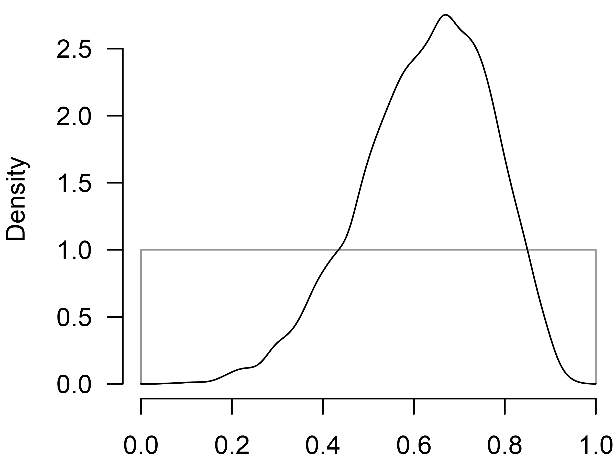

Hierarchical Bayesian Model-Averaged Meta-Analysis
František Bartoš
2025-07-17
Source:vignettes/HierarchicalBMA.Rmd
HierarchicalBMA.RmdHierarchical (or multilevel/3-level) meta-analysis adjusts for the dependency of effect sizes due to clustering in the data. For example, effect size estimates from multiple experiments reported in the same manuscript might be expected to be more similar than effect sizes from a different paper (Konstantopoulos, 2011). This vignette illustrates how to deal with such dependencies among effect size estimates (in cases with simple nested structure) using the Bayesian model-averaged meta-analysis (BMA) (Bartoš et al., 2021; Gronau et al., 2017, 2021). (See other vignettes for more details on BMA: Reproducing BMA or Informed BMA in medicine.)
First, we introduce the example data set. Second, we illustrate the
frequentist hierarchical meta-analysis with the metafor R
package and discuss the results. Third, we outline the hierarchical
meta-analysis parameterization. Fourth, we estimate the Bayesian
model-averaged hierarchical meta-analysis. Finally, we conclude by
discussing further extensions and publication bias adjustment.
Note that since version 3.5 of the RoBMA package, the
hierarchical meta-analysis and meta-regression can use the
spike-and-slab model-averaging algorithm described in Fast Robust Bayesian Meta-Analysis via Spike and
Slab Algorithm. The spike-and-slab model-averaging algorithm is a
more efficient alternative to the bridge algorithm, which is the current
default in the RoBMA package. For non-selection models, the
likelihood used in the spike-and-slab algorithm is equivalent to the
bridge algorithm. However, the likelihood in the selection models is
modified since marginalization of the random-effects is not performed.
As such, the selection models use likelihood that closely approximates
the exact selection model likelihood. In our testing and a simulation
study, found that the approximate selection likelihood performs
reasonably well and is better than the non-hierarchical exact likelihood
model when within-study dependencies are present.
Example Data Set
We use the dat.konstantopoulos2011 data set from the
metadat R package (Thomas et al.,
2019) that is used for the same functionality in the metafor
(Wolfgang, 2010) R package. We roughly
follow the example in the data set’s help file,
?dat.konstantopoulos2011. The data set consists of 56
studies estimating the effects of modified school calendars on students’
achievement. The 56 studies were run in individual schools, which can be
grouped into 11 districts. We might expect more similar effect size
estimates from schools in the same district – in other words, the effect
size estimates from the same district might not be completely
independent. Consequently, we might want to adjust for this dependency
(clustering) between the effect size estimates to draw a more
appropriate inference.
First, we load the data set, assign it to the dat
object, and inspect the first few rows.
data("dat.konstantopoulos2011", package = "metadat")
dat <- dat.konstantopoulos2011
head(dat)
#> district school study year yi vi
#> 1 11 1 1 1976 -0.18 0.118
#> 2 11 2 2 1976 -0.22 0.118
#> 3 11 3 3 1976 0.23 0.144
#> 4 11 4 4 1976 -0.30 0.144
#> 5 12 1 5 1989 0.13 0.014
#> 6 12 2 6 1989 -0.26 0.014In the following analyses, we use the following variables:
-
yi, standardized mean differences, -
vi, sampling variances of the standardized mean differences, -
district, district id which distinguishes among the districts, - and
school, that distinguishes among different schools within the same district.
Frequentist Hierarchical Meta-Analysis with
metafor
We follow the data set’s help file and fit a simple random effects
meta-analysis using the rma() function from
metafor package. This model ignores the dependency between
effect size estimates. We use this simple model as our starting point
and as a comparison with the later models.
fit_metafor.0 <- metafor::rma(yi = yi, vi = vi, data = dat)
fit_metafor.0
#>
#> Random-Effects Model (k = 56; tau^2 estimator: REML)
#>
#> tau^2 (estimated amount of total heterogeneity): 0.0884 (SE = 0.0202)
#> tau (square root of estimated tau^2 value): 0.2974
#> I^2 (total heterogeneity / total variability): 94.70%
#> H^2 (total variability / sampling variability): 18.89
#>
#> Test for Heterogeneity:
#> Q(df = 55) = 578.8640, p-val < .0001
#>
#> Model Results:
#>
#> estimate se zval pval ci.lb ci.ub
#> 0.1279 0.0439 2.9161 0.0035 0.0419 0.2139 **
#>
#> ---
#> Signif. codes: 0 '***' 0.001 '**' 0.01 '*' 0.05 '.' 0.1 ' ' 1The model summary returns a small but statistically significant effect size estimate () and a considerable heterogeneity estimate .
We extend the model to account for the hierarchical structure of the
data, i.e., schools within districts, by using the rma.mv()
function from the metafor package and extending it with the
random = ~ school | district argument.
fit_metafor <- metafor::rma.mv(yi, vi, random = ~ school | district, data = dat)
fit_metafor
#>
#> Multivariate Meta-Analysis Model (k = 56; method: REML)
#>
#> Variance Components:
#>
#> outer factor: district (nlvls = 11)
#> inner factor: school (nlvls = 11)
#>
#> estim sqrt fixed
#> tau^2 0.0978 0.3127 no
#> rho 0.6653 no
#>
#> Test for Heterogeneity:
#> Q(df = 55) = 578.8640, p-val < .0001
#>
#> Model Results:
#>
#> estimate se zval pval ci.lb ci.ub
#> 0.1847 0.0846 2.1845 0.0289 0.0190 0.3504 *
#>
#> ---
#> Signif. codes: 0 '***' 0.001 '**' 0.01 '*' 0.05 '.' 0.1 ' ' 1We find that accounting for the hierarchical structure of the data
results in (1) a slightly larger effect size estimate
()
and (2) larger standard error of the effect size estimate
().
The larger standard error is a natural consequence of accounting for the
dependency between the effect sizes. Because the effect sizes are
dependent, they contribute less additional information than independent
effect sizes would. Specifying the hierarchical model then accounts for
the dependency by estimating similarity between the estimates from the
same cluster (school) and discounting the information borrowed from each
estimate. The estimate of the similarity among estimates from the same
cluster is summarized in the \rho = 0.666 estimate.
Specifications of Hierarchical Meta-Analysis
We specify a simple hierarchical meta-analytic model (see Konstantopoulos (2011) for an example). Using distributional notation, we can describe the data generating process as a multi-stage sampling procedure. In a nutshell, we assume the existence of an overall mean effect . Next, we assume that the effect sizes in each district , , systematically differ from the mean effect, with the variance of the district-level effects summarized with heterogeneity (as between). Furthermore, we assume that the true effects of each study systematically differ from the district-level effect, with the variance of the study effects from the district-level effect summarized with heterogeneity (as within). Finally, the observed effect sizes that differ from the true effects due to random errors .
Mathematically, we can describe such a model as: Where N() denotes a normal distribution with mean and variance.
Conveniently, and with a bit of algebra, we do not need to estimate the district-level and true study effects. Instead, we marginalize them out, and we sample the observed effect sizes from each district directly from a multivariate normal distributions, MN(), with a common mean and covariance matrix S: The random effects marginalization is helpful as it allows us to sample fewer parameters from the posterior distribution (which significantly simplifies marginal likelihood estimation via bridge sampling). Furthermore, the marginalization allows us to properly specify selection model publication bias adjustment models – the marginalization propagates the selection process up through all the sampling steps at once (we cannot proceed with the sequential sampling as the selection procedure on the observed effect sizes modifies the sampling distributions of all the preceding levels).
We can further re-parameterize the model by performing the following
substitution,
and specifying the covariance matrix
using the inter-study correlation
,
total heterogeneity
,
and the standard errors
:
This specification corresponds to the
compound symmetry covariance matrix of random effects, the default
settings in the metafor::rma.mv() function. More
importantly, it allows us to easily specify prior distributions on the
correlation coefficient
and the total heterogeneity
.
Hierarchical Bayesian Model-Averaged Meta-Analysis with
RoBMA
Before we estimate the complete Hierarchical Bayesian Model-Averaged
Meta-Analysis (hBMA) with the RoBMA package, we briefly
reproduce the simpler models we estimated with the metafor
package in the previous section.
Bayesian Random Effects Meta-Analysis
First, we estimate a simple Bayesian random effects meta-analysis
(corresponding to fit_metafor.0). We use
the RoBMA() function and specify the effect sizes and
sampling variances via the d = dat$yi and
v = dat$vi arguments. We set the
priors_effect_null, priors_heterogeneity_null,
and priors_bias arguments to null to omit models assuming
the absence of the effect, heterogeneity, and the publication bias
adjustment components.
fit.0 <- RoBMA(d = dat$yi, v = dat$vi,
priors_effect_null = NULL,
priors_heterogeneity_null = NULL,
priors_bias = NULL,
parallel = TRUE, seed = 1)We generate a complete summary for the only estimated model by adding
the type = "individual" argument to the
summary() function.
summary(fit.0, type = "individual")
#> Call:
#> RoBMA(d = dat$yi, v = dat$vi, priors_bias = NULL, priors_effect_null = NULL,
#> priors_heterogeneity_null = NULL, parallel = TRUE, seed = 1)
#>
#> Robust Bayesian meta-analysis
#> Model 1 Parameter prior distributions
#> Prior prob. 1.000 mu ~ Normal(0, 1)
#> log(marglik) 17.67 tau ~ InvGamma(1, 0.15)
#> Post. prob. 1.000
#> Inclusion BF Inf
#>
#> Parameter estimates:
#> Mean SD lCI Median uCI error(MCMC) error(MCMC)/SD ESS R-hat
#> mu 0.126 0.043 0.041 0.127 0.211 0.00044 0.010 9757 1.000
#> tau 0.292 0.033 0.233 0.290 0.364 0.00034 0.010 9678 1.000
#> The estimates are summarized on the Cohen's d scale (priors were specified on the Cohen's d scale).We verify that the effect size, (), and heterogeneity, (), estimates closely correspond to the frequentist results (as we would expect from parameter estimates under weakly informative priors).
Hierarchical Bayesian Random Effects Meta-Analysis
Second, we account for the clustered effect size estimates within
districts by extending the previous function call with the
study_ids = dat$district argument. This allows us to
estimate the hierarchical Bayesian random effects meta-analysis
(corresponding to fit_metafor). We use the default prior
distribution for the correlation parameter
\rho \sim \text{Beta}(1, 1), set via the
priors_hierarchical argument, which restricts the
correlation to be positive and uniformly distributed on the interval
.
fit <- RoBMA(d = dat$yi, v = dat$vi, study_ids = dat$district,
priors_effect_null = NULL,
priors_heterogeneity_null = NULL,
priors_bias = NULL,
parallel = TRUE, seed = 1)Again, we generate the complete summary for the only estimated model,
summary(fit, type = "individual")
#> Call:
#> RoBMA(d = dat$yi, v = dat$vi, study_ids = dat$district, priors_bias = NULL,
#> priors_effect_null = NULL, priors_heterogeneity_null = NULL,
#> parallel = TRUE, seed = 1)
#>
#> Robust Bayesian meta-analysis
#> Model 1 Parameter prior distributions
#> Prior prob. 1.000 mu ~ Normal(0, 1)
#> log(marglik) 25.70 tau ~ InvGamma(1, 0.15)
#> Post. prob. 1.000 rho ~ Beta(1, 1)
#> Inclusion BF Inf
#>
#> Parameter estimates:
#> Mean SD lCI Median uCI error(MCMC) error(MCMC)/SD ESS R-hat
#> mu 0.181 0.083 0.017 0.180 0.346 0.00088 0.011 9041 1.000
#> tau 0.308 0.056 0.223 0.299 0.442 0.00090 0.016 3859 1.000
#> rho 0.627 0.142 0.320 0.641 0.864 0.00219 0.015 4202 1.000
#> The estimates are summarized on the Cohen's d scale (priors were specified on the Cohen's d scale).and verify that our estimates, again, correspond to the frequentist counterparts, with the estimated effect size, (), heterogeneity, (), and correlation, ().
We can further visualize the prior and posterior distribution of the
parameter using the plot() function.

Hierarchical Bayesian Model-Averaged Meta-Analysis
Third, we extend the previous model into a model ensemble that also
includes models assuming the absence of the effect and/or heterogeneity
(we do not incorporate models assuming presence of publication bias due
to computational complexity explained in the summary). Including those
additional models allows us to evaluate evidence in favor of the effect
and heterogeneity. Furthermore, specifying all those additional models
allows us to incorporate the uncertainty about the specified models and
weight the posterior distribution according to how well the models
predicted the data. We estimate the remaining models by removing the
priors_effect_null and
priors_heterogeneity_null arguments from the previous
function calls, which include the previously omitted models of no effect
and/or no heterogeneity.
fit_BMA <- RoBMA(d = dat$yi, v = dat$vi, study_ids = dat$district,
priors_bias = NULL,
parallel = TRUE, seed = 1)Now we generate a summary for the complete model-averaged ensemble by
not specifying any additional arguments in the summary()
function.
summary(fit_BMA)
#> Call:
#> RoBMA(d = dat$yi, v = dat$vi, study_ids = dat$district, priors_bias = NULL,
#> parallel = TRUE, seed = 1)
#>
#> Robust Bayesian meta-analysis
#> Components summary:
#> Models Prior prob. Post. prob. Inclusion BF
#> Effect 2/4 0.500 0.478 9.170000e-01
#> Heterogeneity 2/4 0.500 1.000 9.326943e+92
#> Hierarchical 2/4 0.500 1.000 9.326943e+92
#>
#> Model-averaged estimates:
#> Mean Median 0.025 0.975
#> mu 0.087 0.000 0.000 0.314
#> tau 0.326 0.317 0.231 0.472
#> rho 0.659 0.675 0.354 0.879
#> The estimates are summarized on the Cohen's d scale (priors were specified on the Cohen's d scale).We find the ensemble contains four models, the combination of models
assuming the presence/absence of the effect/heterogeneity, each with
equal prior model probabilities. Importantly, the models assuming
heterogeneity are also specified with the hierarchical structure and
account for the clustering. A comparison of the specified models reveals
weak evidence against the effect,
,
and extreme evidence for the presence of heterogeneity,
.
Moreover, we find that the Hierarchical component summary
has the same values as the Heterogeneity component summary
because the default settings specify that all models assuming the
presence of heterogeneity also include the hierarchical structure.
We also obtain the model-averaged posterior estimates that combine the posterior estimates from all models according to the posterior model probabilities, the effect size, (), heterogeneity, (), and correlation, ().
Testing the Presence of Clustering
In the previous analyses, we assumed that the effect sizes are indeed clustered within the districts, and we only adjusted for the clustering. However, the effect sizes within the same cluster may not be more similar than effect sizes from different clusters. Now, we specify a model ensemble that allows us to test this assumption by specifying two sets of random effect meta-analytic models. The first set of models assumes that there is indeed clustering and that the correlation of random effects is uniformly distributed on the interval (as in the previous analyses). The second set of models assumes that there is no clustering, i.e., the correlation of random effects , which simplifies the structured covariance matrix to a diagonal matrix. Again, we model average across models assuming the presence and absence of the effect to account for the model uncertainty.
To specify this ‘special’ model ensemble with the
RoBMA() function, we need to modify the previous model call
in the following ways. We removed the fixed effect models by specifying
the priors_heterogeneity_null = NULL
argument.
Furthermore, we specify the prior distribution for models assuming the
absence of the hierarchical structure by adding the
priors_hierarchical_null = prior(distribution = "spike", parameters = list("location" = 0))
argument.
hierarchical_test <- RoBMA(d = dat$yi, v = dat$vi, study_ids = dat$district,
priors_heterogeneity_null = NULL,
priors_hierarchical_null = prior(distribution = "spike", parameters = list("location" = 0)),
priors_bias = NULL,
parallel = TRUE, seed = 1)
summary(hierarchical_test)
#> Call:
#> RoBMA(d = dat$yi, v = dat$vi, study_ids = dat$district, priors_bias = NULL,
#> priors_heterogeneity_null = NULL, priors_hierarchical_null = prior(distribution = "spike",
#> parameters = list(location = 0)), parallel = TRUE, seed = 1)
#>
#> Robust Bayesian meta-analysis
#> Components summary:
#> Models Prior prob. Post. prob. Inclusion BF
#> Effect 2/4 0.500 0.478 0.917
#> Heterogeneity 4/4 1.000 1.000 Inf
#> Hierarchical 2/4 0.500 1.000 4624.794
#>
#> Model-averaged estimates:
#> Mean Median 0.025 0.975
#> mu 0.087 0.000 0.000 0.314
#> tau 0.326 0.317 0.231 0.472
#> rho 0.659 0.675 0.354 0.879
#> The estimates are summarized on the Cohen's d scale (priors were specified on the Cohen's d scale).We summarize the resulting model ensemble and find out that the
Hierarchical component is no longer equivalent to the
Heterogeneity component – the new model specification
allowed us to compare random effect models assuming the presence of the
hierarchical structure to random effect models assuming the absence of
the hierarchical structure. The resulting inclusion Bayes factor of the
hierarchical structure shows extreme evidence in favor of clustering of
the effect sizes,
,
i.e., there is extreme evidence that the intervention results in more
similar effects within the districts.
Summary
We illustrated how to estimate a hierarchical Bayesian model-averaged
meta-analysis using the RoBMA package. The hBMA model
allows us to test for the presence vs absence of the effect and
heterogeneity while simultaneously adjusting for clustered effect size
estimates. While the current implementation allows us to draw a fully
Bayesian inference, incorporate prior information, and acknowledge model
uncertainty, it has a few limitations in contrast to the
metafor package. E.g., the RoBMA package only
allows a simple nested random effects (i.e., estimates within studies,
schools within districts etc). The simple nesting allows us to break the
full covariance matrix into per cluster block matrices which speeds up
the already demanding computation. Furthermore, the computational
complexity significantly increases when considering selection models as
we need to compute an exponentially increasing number of multivariate
normal probabilities with the increasing cluster size (existence of
clusters with more than four studies makes the current implementation
impractical due to the computational demands). However, these current
limitations are not the end of the road, as we are exploring other
approaches (e.g., only specifying PET-PEESE style publication bias
adjustment and other dependency adjustments) in a future vignette.
Footnotes
We could also model-average across the hierarchical structure assuming fixed effect models, i.e., and . However specifying such a model ensemble is a beyond the scope of this vignette, see Custom ensembles vignette for some hints.